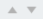

Customization¶
Manage Custom Fields¶
You can add and edit fields for companies, groups, and members in the Manage company > Manage custom fields menu.
Tip
By using custom fields, you can set frequently used companies, groups, and member information (e.g., company phone number, address, company representative name, etc.) to be added automatically in documents. After adding custom fields in the Manage custom fields menu, go to the Template settings > Field settings menu to set which information is to be entered automatically in the documents.

- ① Manage custom fields > Company
You can add fields related to the company such as the company representative name, company phone number, stamp and seal, and then set the values.
- ② Manage custom fields > Group
You can add fields related to groups such as the department name and manager, and then set the values.
- ③ Manage custom fields > Member
You can add fields related to members such as the job title, email address and phone number, and then set the values.
- ④ Add field
If you click the Add field button, the Add custom field pop-up window will be displayed where you can add a new field. Enter the field name, field type (select from text or image), and field value, and then click the OK button to add the field to the custom field list.

- ⑤ Field list
The custom field list shows the field names and the field values that you added. You can also delete the fields and edit the field values.
To delete a field, click the icon (
 ) located to the left of the field list.
) located to the left of the field list.- ⑥ Edit field
If you select a field to edit and then click the edit icon, the Edit custom field pop-up window will be displayed where you can edit the field name, field type, and field value.
You can also change the field order. Select a field in which you want to change the order, and then click the arrow () button.

- ⑦ Save
After editing the custom field, click the Save button to save your changes.
Notification Template Management¶
You can customize the email and SMS notification messages to best suit the needs of your company.
Notification templates can be edited in the Manage company > Notification template management menu or in the Manage templates > Template settings > Notification settings menu.

Default templates are shown in the Manage company > Notification template management menu. You can change the contents of the default templates and add new notification templates.
Basic template types (select from Mail or SMS)¶
Notification for document completion
Notification for document rejection
Notification for document status
Notification for review and sign
Tip
The header is set with the eformsign logo by default. If you upload your company’s logo in the Manage company > Company profile > Company brand tab menu, the logo is applied to the email templates.
How to add a new notification template¶
In addition to the default templates, you can add a new notification template.
In the sidebar menu, click the Manage company > Manage Notification Templates menu.
Click the Add notification template button located at the top right corner of the Notification template management screen.
Select the appropriate Type.
Enter Email title and SMS message. SMS messageis sent for SMS notification with the URL link which connects to the body.
Write a new notification message.
Click the Save button to add it as a notification template.
{kind=link}